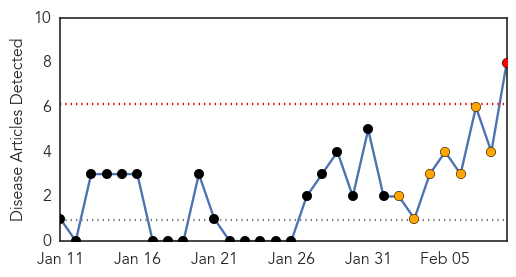
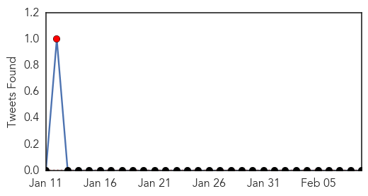
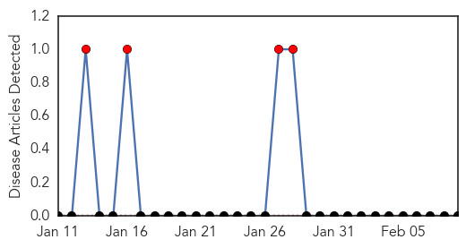

Dengue Fever
30-Day Web Trend
1 alerts, 7 warnings

30-Day Twitter Trend
2 alerts, 0 warnings

Article Locations

Article Confidences

Top Articles:
- 0.998
- CDC: Travelers to New Caledonia warned of Zika fever outbreak
- 0.991
- Malaysia reports nearly 10,000 dengue cases in first month of 2014 prompting use of biological agent BTI
- 0.878
- Exotic Disease Detectives
- 0.840
- The structure of a protein identified that helps dengue and West Nile replicate and spread infection
- 0.777
- Health ministry mulls over compulsory health screening
- 0.740
- Virus advances through Eastern Caribbean
- 0.712
- HEALTH MINISTRY CALLS ON CORPORATE BODIES TO ASSIST IN ADDRESSSINBG DENGUE CONCERNS
- 0.622
- NZ Support Enabling Typhoon-damaged Communities to Recover
Top Tweets:
-
No tweets found for Feb 09, 2014
Bubonic Plague
30-Day Web Trend
30 alerts, 0 warnings

30-Day Twitter Trend
0 alerts, 0 warnings

Article Locations

Article Confidences

Top Articles:
-
No articles found for Feb 09, 2014
Top Tweets:
-
No tweets found for Feb 09, 2014